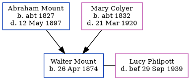

Walter Charles Mount 1874 -
[ Home ] | [ Calendar ] | [ Surnames Index ] | [ Family History ]The son of Abraham Mount (a mariner) and Mary Colyer (a charwoman), Walter Mount, the great-great-uncle of Nigel Horne, was born in Herne, Kent, England on Apr 26, 18741,2,3 and baptized in Herne Bay, Kent, England on Jun 7, 1874. He was married to Lucy Jane Philpott.
Throughout his life, Walter lived in several places: in Eddington, Kent, England on Apr 3, 18814; in Vessels, Lincolnshire, England in 18912; and in Whitstable, Kent on Sep 29, 1939.
Parents
- Abraham was born c. 1827
- Mary Ann was born c. 1832
Citations
- 1881 England Census Online publication - Provo, UT, USA: The Generations Network, Inc., 2004. 1881 British Isles Census Index provided by The Church of Jesus Christ of Latter-day Saints © Copyright 1999 Intellectual Reserve, Inc. All rights reserved. All use is subject to the
- 1891 England Census Online publication - Provo, UT, USA: The Generations Network, Inc., 2005.Original data - Census Returns of England and Wales, 1891. Kew, Surrey, England: The National Archives of the UK (TNA): Public Record Office (PRO), 1891. Data imaged from The National
- Web: UK, Royal Naval Reserve Service Records Index, 1860-1955 Ancestry.com Operations, Inc.
- 1881 England, Wales & Scotland Census - Findmypast (was age 7 and the son of the head of the household)
Media
Canterbury Baptisms Transcription - GBPRS-CANT-B-96677548
Canterbury Marriage Banns Transcription - GBPRS-CANT-M-94100273-1
Kent, Canterbury Archdeaconry banns 1754-1928 - GBPRS/CANT/M/94100294/1
England, Births & Baptisms 1538-1975 Transcription - R_884300824
Family Tree
Generated by Ged2Site. Last updated on Jul 20, 2025